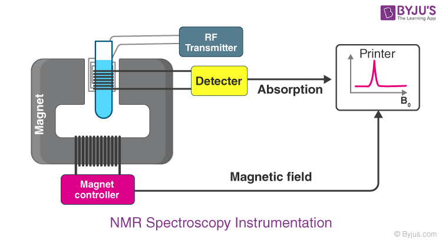
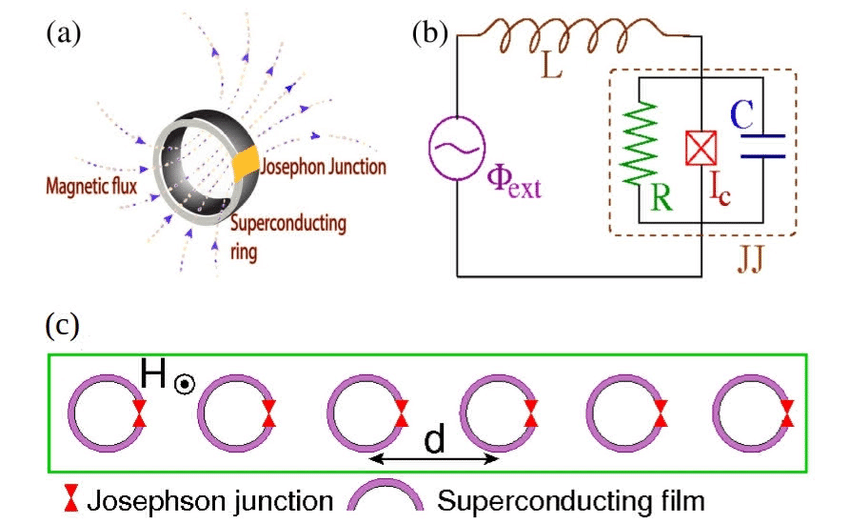
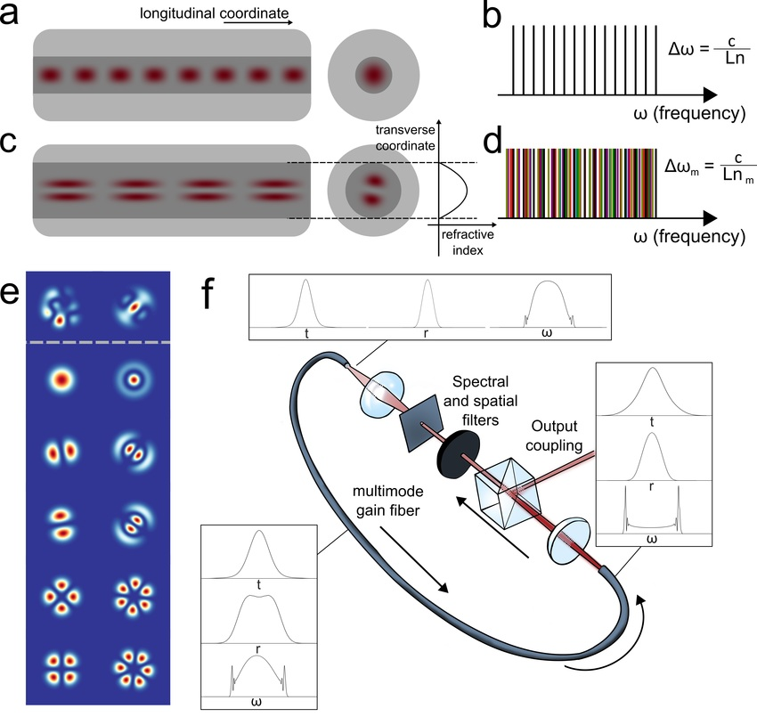
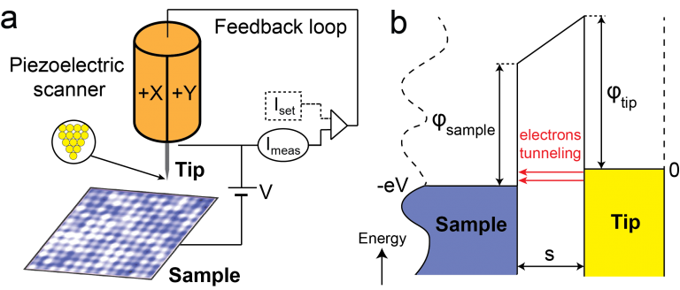

List of experiments:-
1.Electron Spin Resonance
2Nuclear Magnetic Resonance
3.Superconductors and The Superconducting Quantum Physics Devices(SQUIDS)
4.Laser Mode
5.Scanning Tunneling Microscope (STM)
6.Electron Diffraction
Electron Spin Resonance:-
Introduction
Magnetic resonance spectroscopy techniques have revolutionised detection and imaging capabilities across the life and physical sciences. Electron paramagnetic
resonance(EPR), nuclear magnetic resonance (NMR), and magnetic resonance imaging (MRI) are now essential tools in many areas of science and clinical research.
Current ambient NMR1 and EPR-based systems2 employing field gradients have demonstrated imaging resolution as low as 10 µm. However, exploring nanoscale
biological and chemical processes with sub-micrometre resolution requires a major technological shift.

State-of-the-art cryogenic EPR-based imaging approaches have demonstrated detection from 106 spins at sub-micrometre spatial resolution, by reducing the size
of the surface loop and scanning, with projected sensitivity down to the 10–100 spins regime3. Other high-resolution imaging techniques such as magneticresonance
force microscopy4 and scanning tunnelling microscopy provide single-electron spin sensitivity with nanoscale spatial resolution5, but they are also constrained
to cryogenic temperatures and high vacuum environments which precludes their use in imaging functional biochemical reactions. For EPR applications, the regime
of sub-micrometre room temperature spectroscopy and imaging has presented a major challenge.
The development of such a technology would provide insights into electron spin dynamics at the nanoscale, including redox dynamics, organic radical formation
and complicated transition metal biochemistry at the intra-cellularscale.
For animation video click here
Download pdf for more info
Nuclear Magnetic Resonance:-
What is NMR Spectroscopy?
NMR Spectroscopy is abbreviated as Nuclear Magnetic Resonance spectroscopy.
Nuclear magnetic resonance (NMR) spectroscopy is the study of molecules by recording the interaction of radiofrequency (Rf) electromagnetic radiations with the nuclei
of molecules placed in a strong magnetic field.
Zeeman first observed the strange behaviour of certain nuclei when subjected to a strong magnetic field at the end of the nineteenth century, but the practical use
of the so-called “Zeeman effect” wasonly made in the 1950s when NMR spectrometers became commercially available.
Basis of NMR Spectroscopy
Nuclear Magnetic Resonance (NMR) was first detected experimentally at the end of 1945, nearly concurrently with the work groups Felix Bloch, Stanford University and
Edward Purcell, Harvard University.The first NMR spectrum was first published in the same issue of the Physical Review in January 1946. Bloch and Purcell were jointly
awarded the 1952 Nobel Prize in Physics for their research of Nuclear Magnetic Resonance Spectroscopy.
Nuclear magnetic resonance (NMR) spectroscopy is a crucial analytical tool for organic chemists. The research in the organic lab has been significantly improved with
the aid of the NMR. Not only can it provide information on the structure of the molecule, it can also determine the content and purity of the sample. Proton (1H) NMR
is one of the most widely used NMR methods by organic chemists.The protons present in the molecule will behave differently depending on the surrounding chemical
environment, making it possible to elucidate their structure.
For animation video click here
Download pdf for more info
SUPERCONDUCTORS AND THE SUPERCONDUCTING QUANTUM PHYSICS DEVICE(SQUIDS):
Introduction:
Brief overview of superconductors and their properties:
Superconductors are materials that exhibit zero electrical resistance below a critical temperature. When
cooled below this critical temperature, certain materials can conduct electric current without any loss of
energy due to resistance. This unique property makes superconductors valuable for various applications,
including power transmission, magnetic levitation, high-speed computing, and particle accelerators.

Superconducting Quantum Interference Device (SQUID):
A Superconducting Quantum Interference Device (SQUID) is a highly sensitive magnetometer that utilises
the unique properties of superconductors to detect and measure extremely weak magnetic fields. It consists
of a superconducting loop interrupted by one or more Josephson junctions, which are weak links between
two superconducting regions.
The key principle behind SQUID operation is the quantum interference of superconducting electron pairs.
When an external magnetic field passes through the SQUID loop, it induces changes in the magnetic flux
threading the loop. These changes can be detected by the SQUID, which is extremely sensitive to even
minute variations in the magnetic field.
For animation video click here
Download pdf for more info
LASER MODE
What is laser mode?
In laser physics, the term "laser mode" refers to the spatial and temporal distribution of the
laser beam's electromagnetic field. These modes describe the different patterns of intensity
and phase that can exist within the laser cavity.
Laser mode refers to the specific operational characteristics of a laser device. It describes the
behavior of the laser's output beam and the distribution of its optical power. The laser mode is
determined by the resonator design and the properties of the gain medium.

In a laser, light is amplified by stimulated emission in a cavity formed by two mirrors. The
resonator allows only certain modes of light to oscillate, creating a specific spatial and
spectral pattern. These modes represent the allowed standing waves within the resonator.
Each laser mode has a unique spatial profile and frequency, resulting in distinct beam
properties. The mode structure affects beam divergence, power distribution, coherence, and
other characteristics crucial for various applications like communications, materials
processing, medical procedures, and scientific research.
For animation video click here
Download pdf for more info
Scanning Tunneling Microscope (STM)
INTRODUCTION :
A scanning tunneling microscope (STM) is a type of microscope used for imaging surfaces at the atomic
level. Its development in 1981 earned its inventors, Gerd binning and Heinrich Roher then at IBM Zurich the
Nobel Prize in physics in 1986.STM senses the surface by using an extremely sharp conducting tip that can
distinguish features smaller than 0.1 nm with a 0.01 nm depth resolution.
This means that individual atoms canroutinely be imaged and manipulated. Most scanning tunneling microscopes
are built for use in ultra highvaccum at temperatures approach absolutely zero variants exist for studies in
air, water and other environments, and for temperatures over 1000 °C.

STM is based on the concept of Quantum tunneling. When the tip is brought very near to the surface to be
examined, a bias voltage applied between the two allows electrons to tunnel through the vaccum separating
them. The resulting tunneling current is a function of the tip position, applied voltage, and the local density of
state (LDOS) of the sample. Information is acquired by monitoring the current as the tip scans across the
surface, and is usually displayed in image form.
For animation video click here
Download pdf for more info
ELECTRON DIFFRACTION
Electron Diffraction:
Electron diffraction is a phenomenon that occurs when a beam of electrons encounters
an obstacle or passes through a narrow slit. Similar to the diffraction of light, the wave
nature of electrons causes them to spread out and interfere with each other, resulting in
an observable pattern of bright and dark regions known as an interference pattern. This
pattern arises due to constructive and destructive interference of the electron waves.

Interference Patterns:
Interference patterns occur when two or more waves overlap and combine either
constructively or destructively. In the context of electron diffraction, the interference
patterns arise from the superposition of electron waves diffracted by a narrow slit or a
diffraction grating. Constructive interference leads to regions of high intensity (bright
fringes), while destructive interference results in regions of low or zero intensity (dark
fringes).
For animation video click here
Download pdf for more info